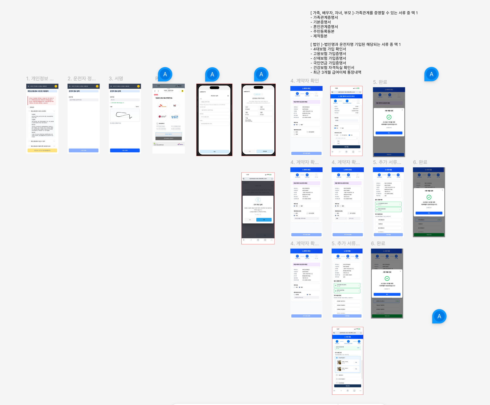

Projects

RIDE SALES — 차량 판매·출고 관리 시스템
엑셀에 흩어져 있던 차량 영업의 돈의 흐름과 고객 관리를, 계약부터 출고·문서 발행까지 하나의 시스템으로. 기획 리드와 프론트엔드 개발을 함께 했습니다.

법정검사 비용 환급 시스템 — 정산 업무 자동화
전화·카카오톡·수기 이체로 처리하던 차량 법정검사비 정산을, 고객 셀프 청구 + OCR 자동 입력 + 입금 문자 매칭으로 자동화. 기획부터 개발까지 전담해 열흘 만에 배포했습니다.

사고접수 징구 시스템 — 차량 사고 서류 접수 모바일 웹
거래처(캐피탈사)의 고객이 차량 사고 시 링크 하나로 동의·본인인증·서류 제출까지 끝내는 모바일 웹. 기획·디자인·프론트엔드를 전담하고 백엔드 개발자와 협업해 만들었습니다.